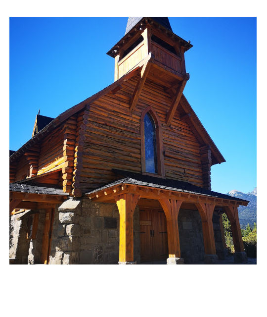
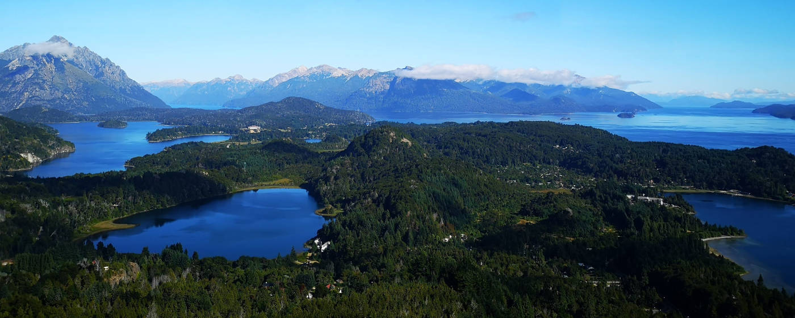
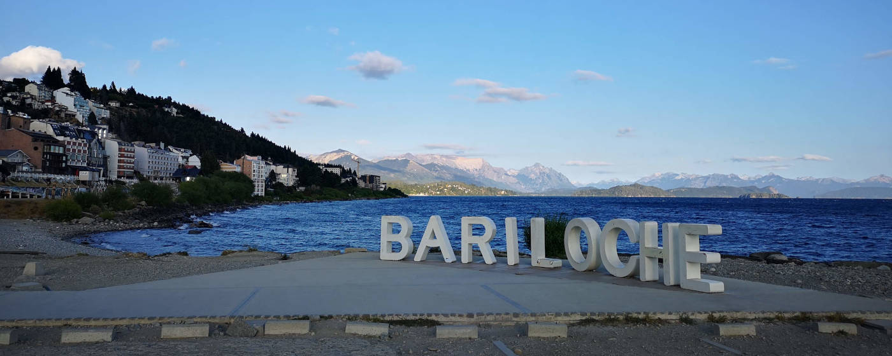
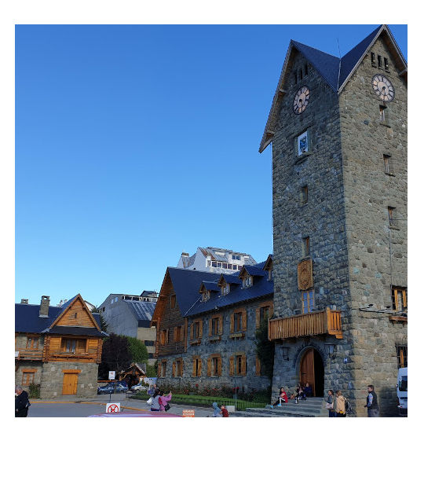
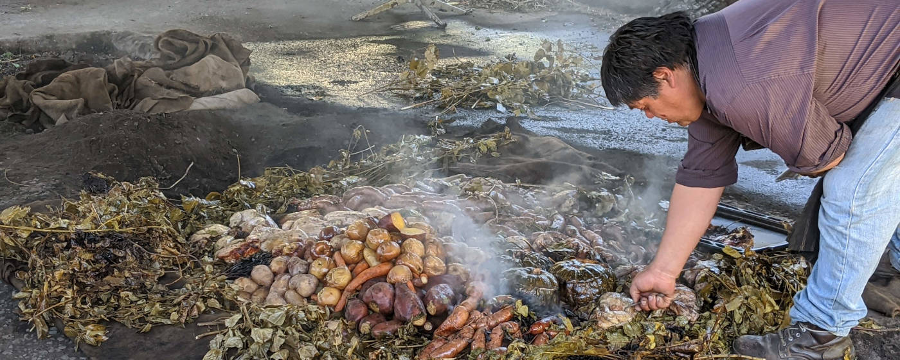
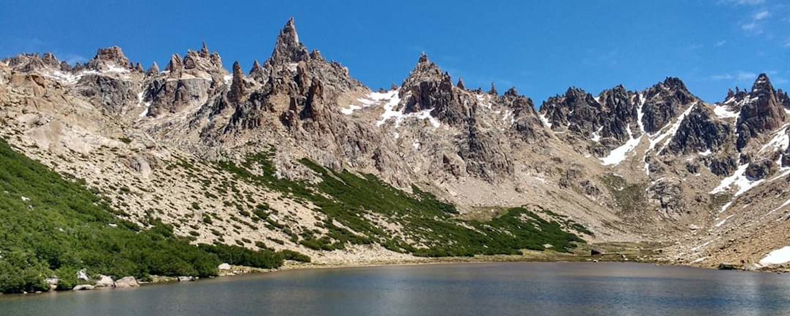

1. Circuito Chico
Zwanzig Kilometer außerhalb von Bariloche startet der berühmte Rundweg Circuito Chico, der einen in die Berg- und Seenwelt dieser Region eintauchen lässt. Auf Grund der Länge von nur 27 Kilometer bietet sich das Fahrrad als perfektes Fortbewegungsmittel zur Erkundung der Gegend an. Es ist zwar teilweise hügelig, doch die Anstrengung, für die vielen kleinen Abzweigungen, die man nur zu Fuß oder mit dem Fahrrad nehmen kann, lohnt sich. Und das Gefühl, wenn man einen Hügel mit dem Mountainbike herunterfährt, der Wind einem ins Gesicht bläst und man eine Aussicht auf Bergmassive und strahlend blaue Seen hat, ist unbezahlbar und unvergesslich.
Um von Bariloche zum Start des Circuito zu gelangen, muss man einen Bus nehmen. Die Buslinien in diese Richtung sind die Nummer 10 und 20 und fahren ungefähr alle 20 Minuten von der Hauptstraße Francisco Perito Moreno ab. Bezahlen kann man in diesen nur mit der Sube Card. Es gibt zwei verschiedene Fahrradverleihe, für welche man beide eine Station nach dem Cerro Campanario aus dem Bus aussteigt. Beim Fahrradverleih Ciruito Chico Aventura** kostet ein Premiumfahrrad 1200 ARS und bei Cordillera Bike** 1000 ARS (März 2020). Normalerweise sind die Fahrräder bei Cordillera Bike in einem etwas besseren Zustand. Sollte man nicht zum frühen Morgen bereits an der Verleihstation sein, ist es ratsam, sich in der Hochsaison zuvor ein Fahrrad zu reservieren.
Die Tour kann in beide Richtungen gemacht werden. Ich persönlich empfehle gegen den Uhrzeigersinn zu fahren, da man dann die Möglichkeit hat am späten Nachmittag in der Patagonia Brauerei die Tour ausklingen zu lassen. Allgemein lohnt es sich möglichst viele kleine Abzweigungen an der Strecke zu nehmen, um so einsame Strände an den Seen mit wundervollen Ausblicken zu entdecken.
Zusätzlich gibt es ein paar Orte, die man auf der Tour besuchen sollte:
Parroquia San Eduardo
Nach 6,6 Kilometer kommt auf einem kleinen Hügel eine kleine Holzkirche mit einem Panaorama Blick auf das prestigeträchtige Llao Llao Hotel.
Llao Llao Hotel**
Nur einen Kilometer von der Kirche entfernt steht eines der berühmtesten und nobelsten Hotels Argentiniens. Der doch sehr stark an ein österreichisches Landhaus errinnernder Stil ist typisch für diese Gegend in Argentinien. Die Innenarchitektur mit Sesseln aus Rehfellen, großen Geweihen an den Wänden und einem riesigen Kamin kann man sich bei einem Kaffee oder Tee anschauen. Für Nichtübernachtungsgäste gibt es die Möglichkeit im Foyer das Restaurant zu nutzen.
Villa Tacul Aussichtspunkt
Weiter geht die Fahrradtour: Vier Kilometer später erreicht man einen Wanderweg zum Aussichtpunkt Villa Tacul. Dank des Fahrrads muss man diesen Weg nicht laufen, sondern kann mit diesem zum Aussichtspunkt fahren. Am Aussichtpunkt hat man neben einer hervorragenden Sicht über die Seen, auch kleine Strände zum Entspannen.
Patagonia Brauerei**
Wenn der größte der Teil der Runde geschafft ist und man schon 20 Kilometer hinter sich gebracht hat, kommt auf der linken Seite die Patagonia Brauerei mit einem großen Biergarten. Dort kann man neben einem Snack bei schönster Aussicht auf den See und die Berge eine Vielzahl an unterschiedlichen Bieren probieren. Meiner Meinung nach ist es die Brauerei mit dem wahrscheinlichst schönsten Ausblick der Welt.
Hinweis: Natürlich kann man den Circuito Chico auch mit dem Auto abfahren und die entsprechende Stopps machen. Alternativ gibt es auch organisierte Touren entlang dieser Naturschönheiten.
♦ ♦ ♦
2. Cerro Campanario
Eine Aussicht über eine grün, graue Bergwelt und zu deren Füßen Seen und Lagunen in den sattesten Blautönen: Genau das erwartet einen auf der Spitze des Cerro Campanario. Obwohl es ein berühmtes Touristenziel in der Gegend ist, kann man diese Aussicht mit einem kleinen Trick ganz für sich allein haben. Es gibt eine Seilbahn und eine Fußweg auf den Cerro Campanario hinauf. Da die Seilbahn aber erst um neun Uhr am Morgen startet, muss man einfach seine Wanderung von ungefähr 45 Minuten früh genug starten und mit etwas Glück gehört die komplette Aussichtsplattform einem allein. Der Wanderweg beginnt mit Blick auf die Seilbahn ungefähr 100 Meter auf der rechten Seite von dieser und ist ein wenig versteckt.
Die Seilbahn fährt von 9 bis 17:30 Uhr und kostet 500 ARS (März 2020).
Um zum Ausgangspunkt für diese Aktivität zu gelangen, nehme man den Bus 10 oder 20 und sage dem Fahrer, dass man am Cerro Campanario heraus möchte. Normalerweise sagt der Busfahrer diese Station aufgrund seiner Beliebtheit an.
♦ ♦ ♦
3. Stadt erkunden und ganz viel Schokolade
Ein Schokoladenladen, noch ein Schokoladenladen, und wenige Meter schon der nächste. Bariloche ist bekannt für seine Schokolade und Pralinen. Aufgrund des großen Hypes der Schokolade in Bariloche ist für den schokoladenverwöhnten deutschen Gaumen nicht jeder Laden eine kulinarische Offenbarung, jedoch gibt es einige sehr gute darunter, die einen Besuch wert sind. Zusätzlich zur Schokolade gibt es ein paar sehenswerte Plätze in dieser gemütlichen Stadt zu entdecken:
Rapa Nui** (Das traditionsreiste Schokoladengeschäft in Argentinien)
Im Jahre 1948 wurde von einem aus Italien stammenden Paar die erste Schokolarie in Bariloche mit dem Namen Tronador eröffnet, woraus dann im Jahre 1996 Rapa Nui wurde.
Heute gibt es ein großes Schokoladengeschäft, ein Café und eine Eisdiele von Rapa Nui in der Haupteinkaufsstraße von Bariloche. Besonders zu empfehlen ist ein wenig Zeit in dem an ein anderes Jahrhundert erinnerndes Cafe mit einem leckeren Schokoladenfondue mit Erdbeeren und einer der Kaffeespezialitäten zu verbringen.
Centro Cívico Bariloche
Man fliege für dreizehn Stunden von Deutschland nach Buenos Aires, um dann noch einmal innerhalb anderthalb Stunden mit dem Flieger nach Bariloche zu gelangen, und dann kommt man auf den Stadtplatz und denkt, dafür hätte ich auch in die Schweiz fahren können. Die Architektur des Platzes und seine Kirche erinnern an ein Schweizer Dorf.
Oft sind kulturelle Veranstaltungen auf dem Platz oder einfach Zauberkünstler für die Kinder. Allgemein ist es ein Ort für Touristen und Einheimische, um sich zu treffen und einen milden Sommerabend zu genießen.
Playa Centro
Der Stadtstrand liegt nur wenige Meter entfernt vom Centro Cívico am See Nahuel Huapi mit einer Aussicht auf den Nahuel Huapi Nationalpark. Zusätzlich gibt es an dieser Stelle einen Bariloche Schriftzug für die typischen Urlaubsfotos.
♦ ♦ ♦
4. Curanto in Colonia Suiza
Einmal das typische Essen der Region probieren: Ja? Dann fahre nach Colonia Suiza, ein kleines verschlafendes Dorf 25 Kilometer von Bariloche entfernt, um das berühmte Curanto zu probieren. Curanto kommt ursprünglich von der chilenischen Küste und wurde von den zuvor in Chile lebenden, schweizerstämmigen Siedlern in 1895 in die Region gebracht. Das aus dem Sprachgebrauch der Mapuche stämmige Wort „curantu“ bedeutet so viel wie heiße Steine. Und das ist auch die Art wie gekocht wird: Es wird mit heißen Steinen in einem Erdofen Fleisch und Gemüse über mehrere Stunden gegart.
Mittwoch und Sonntags wird diese Tradition noch in Colonia Suiza gelebt. Die Zubereitungszeremonie ist um 11 Uhr und gegessen werden kann dann am Nachmittag.
♦ ♦ ♦
5. Cerro Otto
Nur fünf Kilometer von Bariloche entfernt befindet sich der Cerro Otto mit einer Höhe von 1.405 Metern. Das Highlight dieses Berges ist die Cafeteria auf der Spitze mit einer 360° Sicht, welche sich zusätzlich dreht, sodass man innerhalb von zwanzig Minuten den Ausblick in jeder Richtung genossen hat. Vom Gipfel sieht man auf die Stadt Bariloche mit dem Nahuel Huapi See und auf der anderen Seite auf die Berge Leones und Villegas.
Um zum Gipfel des Cerro Otto zu gelangen, gibt es die Möglichkeit des Wanderns oder die Seilbahn zu nehmen. Die Kabinenbahn hat pro Kabine Platz für vier Personen und kostet 900 ARS (Juni 2020). Die alternative Wanderung beginnt direkt hinter der Seilbahn und man folgt einem zwei Kilometer langen, steilen Weg zum Gipfel des Cerro Otto (570 Höhenmeter).
Vom Gipfel des Cerro Otto aus gibt es zusätzlich die Möglichkeit eine Wanderung zum Aussichtspunkt „Piedra de Habsburgo“ zu machen. Die Wanderung ist insgesamt sechs Kilometer lang und führt durch grüne Wälder. Es handelt sich um eine einfache Wanderung mit einer Höhendifferenz von nur 88 Metern.
Zum Ausgangspunkt seines Ausfluges zum Cerro Otto gelangt man mit dem öffentlichen Bus (Nummer 10, 20, 22) oder einem von der Seilbahngesellschafft betriebenen, kostenlosen Shuttleservice (Abfahrtspunkt in Bariloche an der Haltestelle Mitre y Villegas).
♦ ♦ ♦
6. Refugio Frey Hike
Distanz: 20 km - Höhenmeter: 700 m - Schwierigkeitsgrad: Mittel*
An einem großen Bergsee, umschlossen von Felswänden thront das Refugio Frey. Ein Paradies, welches man an anderen Orten nur nach mehrtätigen Wanderungen unter extremen Bedingungen finden kann, findet man in Bariloche innerhalb einer einfachen Tageswanderung. Die Wanderung ist 20 Kilometer lang und es gibt 700 Höhenmeter zu überwinden.
Der Start der Wanderung ist am Parkplatz des Cerro Catedral Skigebietes (stündlich fahrender Bus Nummer 55 vom Busbahnhof in Bariloche). Ein Holzschild mit der Aufschrift „Frey“ kennzeichnet den Start der Wanderung. Die Wanderung ist gut markiert und führt durch Wälder, über schmale Bäche, Brücken und entlang blauer Seen.
Es gibt die Möglichkeit im Refugio Frey zu übernachten. Aufgrund der in den letzten Jahren stark gestiegenen Besucherzahlen, muss ein Platz im Bettenlager zuvor über die Homepage des Refugios reserviert werden. Eine Übernachtung kostet 1000 ARS. Zusätzlich werden im Refugio Mahlzeiten angeboten, sodass man keine Verpflegung mitbringen muss (Stand März 2020).
Hinweis: Es gibt weitere Wanderwege um zum Refugio Frey zu gelangen. Eine Übersicht über die anderen Routen findest du hier.
♦ ♦ ♦
7. Tronador Hill Hike
Distanz: 24 km - Höhenmeter: 1060 m - Schwierigkeitsgrad: Mittelschwer*
Um den höchsten Berg in der Nähe von Bariloche, den Cerro Tronador mit 3.554 Metern, zu besteigen, muss man ein geübter Bergsteiger sein. Doch es gibt es auch für den normalen Wanderer eine wunderschöne Wanderung, die zwischen Gletschern entlangführt, wo man Kondore (Vogelart, die zu den Neuweltgeiern zählt) beobachten kann und am Ziel das Refugio Meiling erreicht.
Der Startpunkt der Wanderung ist an der Unterkunft Pampa Linda, die 90 Kilometer von Bariloche entfernt liegt. Es gibt einen Shuttleservice, der vom Refugio Meiling angeboten wird, um dorthin zu gelangen. Die Wanderung ist insgesamt 24 Kilometer lang und man muss 1060 Höhenmeter überwinden. Es gibt über die komplette Strecke Wegmarkierungen, die allerdings im oberen Teil ganzjährig von Schnee verdeckt sein können.
Im Refugio Meiling gibt es die Möglichkeit zu übernachten und Verpflegung zu bekommen.
♦ ♦ ♦
8. Cerro Catedral (Wintersportgebiet)
Das größte Skigebiet der südlichen Hemisphäre ist nur wenige Kilometer von Bariloche entfernt mit 120 Pistenkilometern auf einer Fläche von über 600 Hektar und mit 34 Liften. Sollte man also doch einmal ein Skigebiet mit Schneesicherheit im europäischen Hochsommer suchen, ist man am Cerro Catedral richtig. Auch die entsprechende Infrastruktur vom Skiverleih, über Snowboardschule bis hin zu Skibussen wird geboten.
♦ ♦ ♦